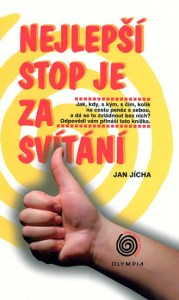

„Správná cesta nemá konec, jen návrat…“
Ten, kdo čte můj blogýsek pozorně, už možná zaznamenal, že jméno Jana Jíchy se zde neobjevuje poprvé. Hned u jednoho z mých prvních příspěvků o dovolené na Holičkách je zmiňován jako náš cestovatelský guru :D…co si pod tímto titulem představit 😀 ?? Na osvětlení musím říct, že jeho knížku „Nejlepší stop je za svítání“ jsem Terce nadělila kdysi dávno k Vánocům, protože jsme se toho roku nadšeně chystaly na naši první prázdninovou dámskou jízdu bez rodičů a tato knížka, kterou sám autor jako cestopis neoznačuje :-), nás měla tak nějak inspirovat. Terka ji přibalila na dovolenou do batohu, a tak s námi „Jícha“, jak jsme toto literární dílo začaly pracovně označovat :), projel jižní Čechy a podíval se s námi na všelijaká místa – třeba do Jindřichova Hradce. Tímto ale příběh ani zdaleka nekončí. Po našich báječných pomaturitních prázdninách jsme nastoupily na výšku a jedna z nás měla to štěstí, že se o nějaký ten pátek později s „pravým“ Jíchou setkala tváří v tvář :D. Tou šťastnou byla Terka, kterou na stopu přivedla naše bývalá třídní profesorka ze střední, nyní vyučující na pražském Keplerově gymnáziu, která se Terce zmínila o svém kolegovi z práce, jenž byl čirou náhodou nositelem stejného jména. Když ještě vyzvěděla, že je i literárně činný, už to bylo trochu moc náhod najednou. Pár měsíců zpátky byla pak Terka třídní pozvána na adventní koncert do Toulcova dvora, kde konečně náš dávný idol spatřila na vlastní oči a hned mi nadšeně smskovala dojmy :D. Zpětně jsem se dozvěděla, že jen o dva dny později Jícha koncertoval i v naší moravské metropoli a to přímo za rohem od mého privátu :O !!! Jó, dějou se věci na tom světě…

Minulý týden se mi knížka dostala do rukou znovu a vlastně spíš omylem – přinesl mi ji totiž do hospody Lájen, který měl „Jíchu“ od Terky už asi dva roky vypůjčeného, ale spletl se a myslel, že ta knížka je ve skutečnosti moje. Na druhý den ráno, kdy jsem se nestačila divit, že „Jícha“ přežil včerejší noc a cestu z Desertu :D, jsem si řekla, že když už ke mně zase po dlouhé době doputoval, přečtu si ho podruhé. Autor byl za mlada asi velký dobrodruh a jeho vyprávění je toho jasným důkazem. Radí čtenáři, jak se dá cestovat bez koruny v kapse, jaká místa navštívit, co s sebou na cesty nevláčet a jak to vůbec všechno ve zdraví přežít. Je to opravdu ta nejlepší možná knížka, jakou s sebou můžete vzít na letní prázdninovou jízdu  ! Dlouho jsem se nemohla rozhodnout, jaký úryvek z „Jíchy“ vybrat, nakonec jsem zvolila pasáž o poutnické holi, u které jsem se asi nejvíc zasmála a třeba pro někoho bude i informačně přínosná :D…
! Dlouho jsem se nemohla rozhodnout, jaký úryvek z „Jíchy“ vybrat, nakonec jsem zvolila pasáž o poutnické holi, u které jsem se asi nejvíc zasmála a třeba pro někoho bude i informačně přínosná :D…
K holi se dá přijít různými způsoby. Mastňáci ji kupují za cenu od tří (klacek) do devíti (se šňůrkou) eur. Lze si ji také vyřezat z některého stromu, najít ve škarpě nebo zapomenutou u kostela, sámošky nebo baru, či čmajznout jinému poutníkovi, který déle spí. K čemu hůl slouží ? Upřímně řečeno, je úplně k ničemu. Nepohání kupředu ani nebrzdí z kopce, nedá se s ní bránit proti vlkům ani lupičům, protože obojí už dávno vymřelo, zabírá minimálně jednu ruku, na asfaltu je hlučná a musí se na ni pořád myslet, protože se ráda zapomíná, ale pak nepřijde jako pes, nýbrž tam zůstane jako přejetý pes. Tak co s ní ? I já jsm šel Camino s holí, takže vím, co to je za práci udělat ji užitečnou.
Ale jde to: Poutnickou hůl si můžete přehazovat z ruky do ruky a zpět. Lze s ní ťukat v rytmu nějaké písničky nebo vysílat morseovku (ťuky a škráby). Pro intelektuály se nabízí ťukat holí do země na každý krok, jehož pořadové číslo je prvočíslo (na 1., 3., 5., 7., 11. atd.), nebo ťukat po vzestupném počtu kroků (po 1., pak po dalším 2. atd.). Dá se s ní cvičit taekwon-do, když vedle vás nikdo nejde, hlavně žádný Korejec, protože by se vám smál. Můžete s ní ťukat před sebou vlevo a vpravo a mít při tom zavřené oči, jako že jste slepec. Nebo jí mávat ze strany na stranu za sebou a odhánět tak malé čoklíky (proti velkým psům nepomůže, protože velcí španělští psi se na nikoho nevrhají, nýbrž ponejvíce spí). S holí je možné cvičit jako mažoretka, želva ninja nebo Jan Železný, vrhat ji kupředu na způsob oštěpu a zase sbírat, skákat s ní o tyči a klusat na ní obkročmo jako na koni. Je vhodná k psaní šipek do měkkého podkladu (písek, štěrk) pro další poutníky, a legrace je rovněž kreslit zavádějící šipky nesprávným směrem nebo nazpátek. Další možností je psát holí do rozteklého asfaltu. Není-li na cestě asfalt, nebo v zimě, když je tuhý, poslouží stejně dobře čerstvé kraví lejno, těch je dostatek vždy a všude. Je-li hůl zahnutá, můžou se s ní trhat fíky a přitahovat vysoké větve či sousedovo pivo. Poutníci, jejichž motivem k pouti není pouze víra v existenci apoštolova hrobu, mohou využít hole na způsob čínských nosičů vody – na jeden konec se zavěsí vlastní ruksak, na druhý zavazadlo nějaké sličné poutnice, a hned je ruka v rukávě. Dávní poutnící nosili prý na holi tykev s vodou, ale to je blbost, musela se jim hrozně bimbat; sám jsem na ní zkoušel nést jenom čepici a musím říct, že lítala jak hadr na holi. Hůl se dá vyřezávat a může se s ní provozovat vandalství i dobré skutky, sekat kopřivy, rozmačkávat slimáky a podrážet nohy babičkám, otvírat popelnice, když je před nimi kaktus, rozmlátit ten kaktus, ukazovat cestu na mapě a odnést zabitá antilopa. Hůl je prostě k nezaplacení.
Hůl musí být na konci pouti zespodu pořádně otřískaná. Jdete-li jen malou část trasy, bouchejte pořádně do země, ať se vám taky roztřepí (na některých dlážděných cestách se při bouchání ozývá dutý zvuk, což znamená, že pod dlažkou je poklad, anebo že to dělal nějaký fušér).
Moje hůl, to byl oholený zahnutý klacek se sukem, našel jsem ji u silnice, kde už to asi předchozího majitele přestalo bavit a odjel stopem (pozor, s holí nejde stopovat!). Nesla vyřezaný monogram MG, což odpovídá jak Michailu Gorbačovovi, tak Mahátmá Gándhímu. Ať tak nebo tak mám teď doma hezky vzácný kousek dříví a moji pozůstalí ho mohou vydražit a do smrti nesáhnout na práci.
Pokud vás osobnost našeho cestovatelského guru zaujala, doporučím vám ještě jeho webové stránky, kde se o něm můžete dozvědět něco víc…a na příští dovolenou ho stejně jako my přibalit do batohu ;-)…
http://www.honzajicha.cz/


{kind=link}
{kind=link}
{kind=link}
{kind=link}